SPSS 重复测量方差分析 II
作者：Ruben Geert van den Berg，归类于 方差分析 (ANOVA)
如需了解一些基础知识，请参阅 什么是方差分析 (ANOVA)？
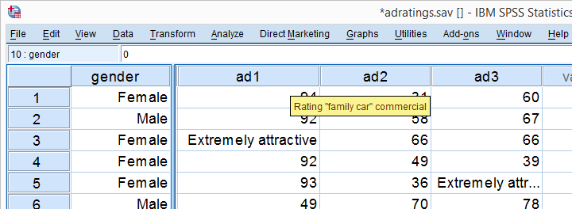
某汽车品牌让 18 位受访者对 3 种不同的汽车广告的吸引力进行评分。结果数据（部分如上图所示）位于 adratings.sav 中。还测量了一些背景变量，包括受访者的性别。我们要尝试回答的问题是：这 3 个广告的吸引力评分是否相同？性别是否在其中发挥作用？由于我们将比较_在相同受访者身上测量_的 3 个或更多变量的均值，因此我们将对数据进行 重复测量方差分析 (repeated measures ANOVA)。我们将首先概述一个简单而可靠的完整流程方法。然后，我们将逐步进行分析，并解释每个步骤的内容和原因。
析因方差分析 - 基本工作流程
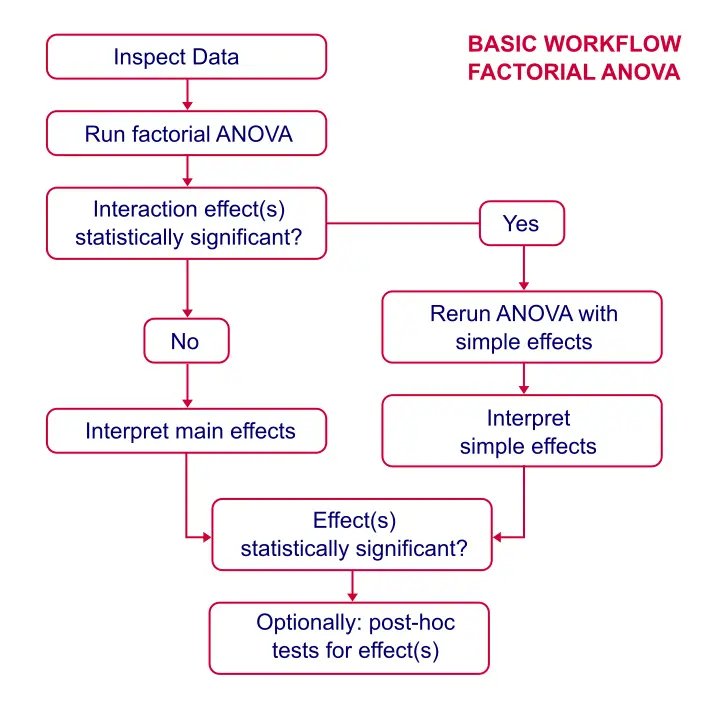
数据检查
首先，如果我们不了解变量的内容，我们不会分析任何变量。我们至少要检查一些直方图，看看是否存在异常值、缺失值 (missing values) 或奇怪的模式。对于性别 (gender)，条形图可能更合适，但直方图也可以。
SPSS 基本直方图语法
***快速检查异常分布/异常值/缺失值。
**
frequencies gender ad1 to ad3/format notable/histogram.您现在可以自己验证，所有分布看起来都是合理的，并且这些变量没有缺失值或其他问题。
重复测量方差分析的假设
- 独立且同分布的变量（“独立观测 (independent observations)”）。
- 正态性 (normality)：检验变量在总体中服从多元 正态分布 (normal distribution)。
- 球形性 (sphericity)：检验变量之间_所有差异分数 (difference scores)_ 的方差在总体中必须相等。 1 , 2 , 3
首先，由于 SPSS 中的每个案例（数据单元格的行）都代表不同的人，因此观测很可能是独立的。 关于正态性 (normality) 假设，我们之前的直方图显示了一些 偏度 (skewness)，但没有什么太令人担忧的。 最后，Mauchly 球形性检验 (Mauchly’s test for sphericity) 将包含在输出中，因此我们稍后将查看它是否成立。
在 SPSS 中运行重复测量方差分析
我们将首先按照下面的屏幕截图运行一个非常基本的分析。然后，初始结果将提示我们如何在第二次运行中很好地微调我们的分析。
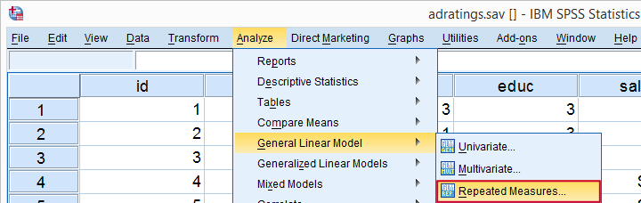
如果您没有安装 SPSS 选项“高级统计 (Advanced statistics)”，则您的菜单中可能缺少“_R_epeated Measures (重复测量)”。您可以通过运行 show license. 来验证这一点。
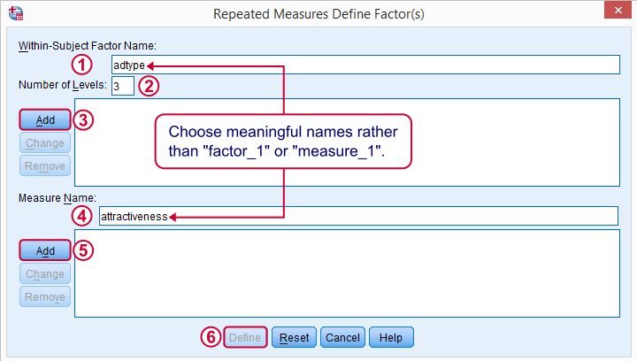
被试内因子 (within-subjects factor) 是区分我们将比较的三个变量的任何因素。我们建议您为其选择一个有意义的名称。
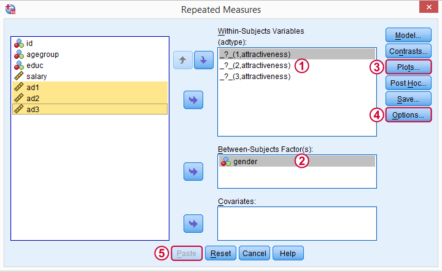
一次性选择三个广告评分变量 (adratings variables)，并将它们移动到“被试内变量 (within-subjects variables)”框中。将性别 (gender) 移动到“被试间因子 (between-subjects factor)”框中。
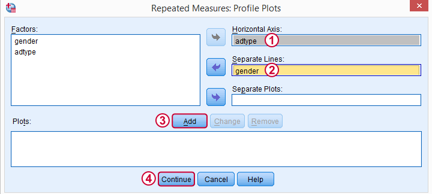
这些轮廓图 (profile plots) 将在一个多线图表中很好地可视化我们的 6 个均值（2 个性别的 3 个广告）。
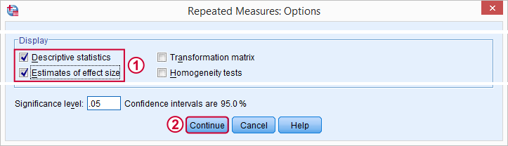
现在，我们只勾选“_O_ptions (选项)”子对话框中的“_D_escriptive Statistics (描述统计)”和“_E_stimates of Effect Size (效应大小估计)”。单击主对话框中的“_P_aste (粘贴)”将产生以下语法。
SPSS 基本重复测量方差分析语法
***带有被试内和被试间因子的基本重复测量方差分析。
**
GLM ad1 ad2 ad3 BY gender
/WSFACTOR=adtype 3 Polynomial
/MEASURE=attractiveness
/METHOD=SSTYPE(3)
/PLOT=PROFILE(adtype*gender)
/PRINT=DESCRIPTIVE ETASQ
/CRITERIA=ALPHA(.05)
/WSDESIGN=adtype
/DESIGN=gender.输出 - 选择和重新排序
由于我们不打算检查所有输出，因此我们将首先删除一些项目，如下所示。
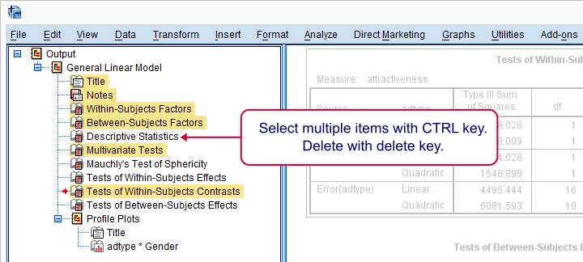
接下来，我们将通过拖放将其拖到描述性统计表下方来向上移动我们的轮廓图 (profile plots)。
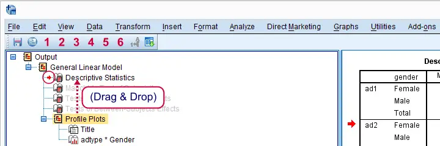
输出 - 均值图和描述性统计

在我们输出的核心，我们只有 6 个均值：男性和女性分别的 3 个广告。如 变量标签 (variable labels) 中所示，男性和女性都认为广告类型 1（“家庭用车 (family car)”）最具吸引力。广告类型 2（“年轻人用车 (youngster car)”）的评分最差，广告类型 3 介于两者之间。技术说明：这些均值可能与 DESCRIPTIVES 输出不同，因为重复测量程序会从整个程序中排除所有具有一个或多个缺失值的案例。
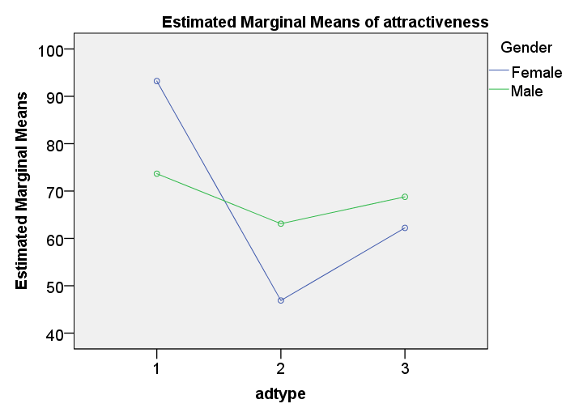
这些均值在我们的轮廓图 (profile plot) 中得到了很好的可视化。“估计边际均值 (estimated marginal means)”等于饱和模型（包括所有可能的影响）的观测均值。默认情况下，SPSS 始终测试任何析因方差分析的饱和模型。现在，真正重要的是这些线远非平行。这表明存在 交互效应 (interaction effect)：广告类型对男性和女性的影响不同。 粗略地说，男性的线条几乎是水平的：这三个广告的评分非常相似。然而，对于女性来说，ad1 和 ad2 之间存在巨大差异。 但请记住，这只是一个样本。我们看到的差异是否大到足以对从中抽取样本的整个总体 (entire population) 得出任何结论？正如我们稍后将看到的，答案是明确的“是！”。
输出 - Mauchly 检验
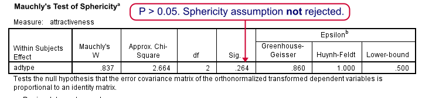
正如我们在 假设 中提到的，重复测量方差分析需要球形性 (sphericity)，Mauchly 检验 (Mauchly’s test) 会评估这是否成立。p 值 (p-value)（用“Sig.”表示）为 0.264。如果 p > 0.05，我们通常会声明满足球形性 (sphericity)，因此我们的数据满足球形性假设 (sphericity assumption)。我们不需要 Greenhouse-Geisser 或 Huynh-Feldt 等任何校正。下图显示了如果球形性（不）成立时要报告哪些结果。
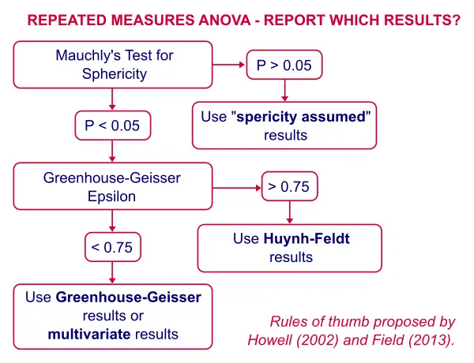
输出 - 被试内效应
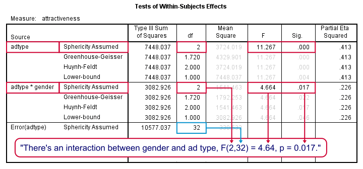
首先，性别和广告类型之间的 交互效应 (interaction effect) 的 p 值（“Sig.”）为 0.017。如果 p < 0.05，我们通常会将效应标记为“统计显着 (statistically significant)”，因此我们确实如轮廓图 (profile plot) 所示，存在交互效应。 该图显示，广告类型的影响对于男性和女性显然是不同的。因此，我们应该分别测试广告类型对男性和女性受访者的影响。这些被称为简单效应 (simple effects)，如我们的流程图所示。 广告类型存在很强的主效应 (main effect)：F(2,32) = 11.27，p = 0.000 也是如此。但正如我们的流程图所示，我们将 忽略它。主效应 (main effect) 将男性和女性混为一谈，只有当他们对广告类型表现出相似的影响时，这才是合理的。也就是说：如果我们的轮廓图 (profile plot) 中的线条大致平行，但事实并非如此。 换句话说，不存在 广告类型 的影响 这样的东西，因为主效应 (main effect) 表明了这一点。广告类型对男性和女性的单独影响会被将它们放在一起而模糊，因此我们将分别分析它们（简单效应）。
重复测量方差分析 - 简单效应
SPSS 的菜单中没有“简单效应 (simple effects)”这样的东西。但是，我们可以通过运行以下语法，使用 SPLIT FILE 轻松地单独分析男性和女性受访者。
***对于简单效应：首先按性别拆分文件。
**
sort cases by gender.
split file by gender.重复测量方差分析 - 第二次运行
我们刚刚进行的 SPLIT FILE 允许我们分析简单效应：分别针对男性和女性的 重复测量方差分析 输出。我们可以从 主菜单 重新运行分析，也可以使用对话框调用按钮 作为一个方便的快捷方式。
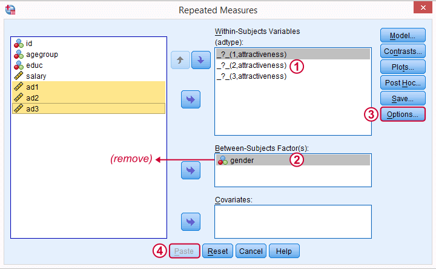
我们从“被试间因子 (between-subjects factor)”框中删除性别 (gender)。因为分析是分别针对男性和女性运行的，所以性别 (gender) 在两组中都是一个常数。
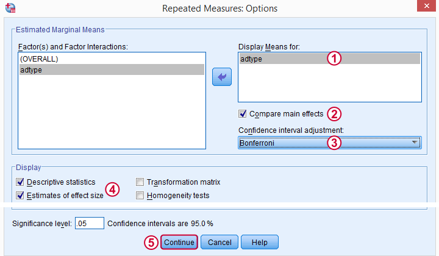
正如我们的 流程图 所示，我们现在将添加一些 事后检验 (post hoc tests)。被试内因子（在我们的例子中是广告类型）的事后检验 (post hoc tests) 很好地隐藏在“_O_ptions (选项)”之后，而不是“_P_ost Hoc (事后检验)”按钮之后。后者只允许对被试间效应 (between-subjects effects) 进行事后检验 (post hoc tests)，而我们不再拥有这种效应。
重复测量方差分析 - 简单效应语法
*仅针对广告类型的重复测量方差分析，带有针对被试内效应的事后检验 (post-hoc tests)。
GLM ad1 ad2 ad3
/WSFACTOR=adtype 3 Polynomial
/MEASURE=attractiveness
/METHOD=SSTYPE(3)
/EMMEANS=TABLES(adtype) COMPARE ADJ(BONFERRONI)
/PRINT=DESCRIPTIVE ETASQ
/CRITERIA=ALPHA(.05)
/WSDESIGN=adtype.简单效应 - 输出
我们像之前讨论的那样解释大多数输出。请注意，广告类型对女性受访者有影响：F(2,16) = 11.68，p = 0.001。其确切含义是，如果_所有三个_总体平均评分都相等，那么我们有 0.001（或 0.1%）的机会发现我们在样本中观察到的平均差异。 对于男性，这种影响在统计上并不显着：F(2,16) = 1.08，p = .362：如果 3 个总体平均值确实相等，那么我们有 36% 的机会发现我们的样本差异；我们在样本中看到的内容并没有否定我们的零假设。
输出 - 事后检验
好的，我们刚刚得出结论，广告类型与女性（而非男性）受访者的评分相关。因此，我们将仅解释 女性受访者 的事后结果 (post hoc results)，而忽略男性受访者的结果。 但为什么要首先运行事后检验 (post hoc tests) 呢？好吧，我们得出的结论是，所有总体平均评分相等的零假设 (null hypothesis) 是站不住脚的。但是，对于 3 个或更多均值，我们不确切地知道_哪些_均值是不同的。事后 (Post hoc)（拉丁语，意为“此后”）检验 - 正如我们的 流程图 所示 - 将告诉我们这一点。
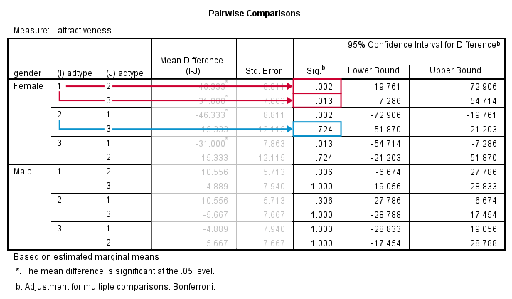
对于 3 个均值，我们有 3 个比较，并且此表中的每个比较都列出了两次；1 与 3 显然与 3 与 1 相同。我们很快看到 ad1 与 ad2 和 ad3 不同。然而，ad2 和 ad3 之间的差异在统计上并不显着。不幸的是，SPSS 没有提供报告这些结果所需的 t 值和自由度。 获得这些值的另一种方法是在所有变量对上运行 配对样本 t 检验 (paired samples t-tests)。Bonferroni 校正 (Bonferroni correction) 意味着我们将所有 p 值乘以我们正在运行的检验次数（在本例中为 3）。这样做留给读者作为练习。
感谢您的阅读！
参考文献
- Field, A. (2013). Discovering Statistics with IBM SPSS Newbury Park, CA: Sage.
- Howell, D.C. (2002). Statistical Methods for Psychology (5th ed.). Pacific Grove CA: Duxbury.
- Wijnen, K., Janssens, W., De Pelsmacker, P. & Van Kenhove, P. (2002). Marktonderzoek met SPSS: statistische verwerking en interpretatie [使用 SPSS 进行市场调查：统计处理和解释]。 Leuven: Garant Uitgevers.